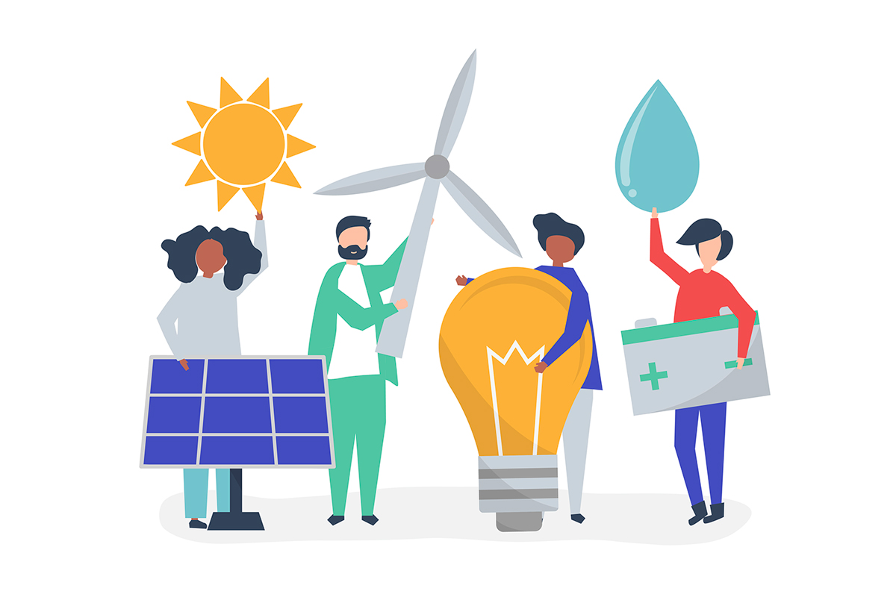

IMPACTO EN LA SOCIEDAD
1. Conciliación vida laboral-personal
El E-work ha permitido que muchas personas adapten sus horarios de trabajo a sus necesidades personales. Esto se traduce en:
• Más tiempo con la familia o para uno mismo.
• Menos horas perdidas en desplazamientos.
• Reducción del estrés y mejoras en la salud mental (en algunos casos).
Sin embargo, cuando no hay límites claros entre la vida laboral y personal, puede generarse una “hiperconexión” o agotamiento digital.
2. Cambios en la estructura familiar y social
El trabajo desde casa ha transformado la dinámica en los hogares:
• Algunas parejas comparten más tiempo juntos, pero también surgen conflictos si
no hay espacios adecuados o privacidad.
• Hijos ven más a sus padres, lo cual puede ser positivo para su desarrollo emocional.
3. Inclusión y accesibilidad
Personas antes excluidas del mercado laboral (por discapacidad, localización geográfica o responsabilidades familiares) ahora pueden acceder a oportunidades gracias a:
• Plataformas de trabajo remoto.
• Flexibilidad de horarios.
• Reducción de barreras físicas y de movilidad.
4. Desigualdades digitales
La digitalización acelerada dejó en evidencia que no todos tienen las mismas condiciones para trabajar en línea:
• Falta de internet de calidad en zonas rurales o marginales.
• Carencia de equipos adecuados (PCs, cámaras, software).
• Falta de formación en habilidades digitales básicas.
Esto ha acentuado las diferencias entre quienes pueden adaptarse al E-work y quienes no.
5. Impacto ambiental
• Disminución del uso de vehículos privados y transporte público.
• Menor consumo de energía en oficinas.
• Reducción en la emisión de gases contaminantes.
Una consecuencia positiva es el avance hacia modelos de trabajo más sostenibles y respetuosos con el medio ambiente.
IMPACTO EN EL MERCADO LABORAL
1. Transformación de los modelos de empleo
El E-work ha impulsado formas de contratación más flexibles:
• Trabajo por objetivos o tareas, no por horario fijo.
• Aumento de trabajadores freelance o por plataformas digitales (gig economy).
• Contrataciones sin importar la ubicación del empleado.
Pero esto también puede llevar a una mayor precarización si no existen protecciones laborales adecuadas (falta de contratos, seguridad social, beneficios).
2. Redefinición del espacio físico laboral
Muchas empresas han optado por:
• Oficinas híbridas o compartidas.
• Reducción del tamaño de las oficinas centrales.
• Ahorro en costos de infraestructura.
Esto también impacta sectores como el inmobiliario, transporte, servicios de cafetería o limpieza vinculados a oficinas físicas.
3. Nuevas habilidades demandadas
El mercado exige:
• Dominio de herramientas digitales (Zoom, Slack, Trello, etc.).
• Autonomía y capacidad de autoorganización.
• Comunicación escrita clara y efectiva.
Esto está impulsando una transformación en la educación y formación profesional, tanto formal como autodidacta.
4. Globalización del talento
• Las empresas ya no buscan talento local únicamente, sino que pueden contratar a
personas de cualquier parte del mundo.
• Mayor competencia entre trabajadores, pero también más oportunidades para
quienes viven en países con menos empleo.
Esto presenta diferentes retos, como las diferencias culturales, horarios, gestión de equipos remotos.
5. Desafíos legales y de seguridad
El E-work plantea preguntas nuevas:
• ¿Quién paga los costos del trabajo en casa (luz, internet, mobiliario)?
• ¿Cómo se controla la jornada laboral?
• ¿Qué ocurre si hay accidentes en casa durante el trabajo?
• ¿Cómo se protege la información empresarial desde múltiples ubicaciones?
Los marcos legales están en proceso de actualización en muchos países.
El E-work no solo ha modificado la forma en que trabajamos, sino también cómo vivimos y nos relacionamos. Aunque trae muchas ventajas, también presenta desafíos que deben abordarse con políticas públicas, inversión en tecnología y desarrollo de nuevas competencias.

El E-work: nuevas formas de trabajo
6. Impacto en la sociedad y en el mercado laboral
Obra publicada con Licencia Creative Commons Reconocimiento Compartir igual 4.0